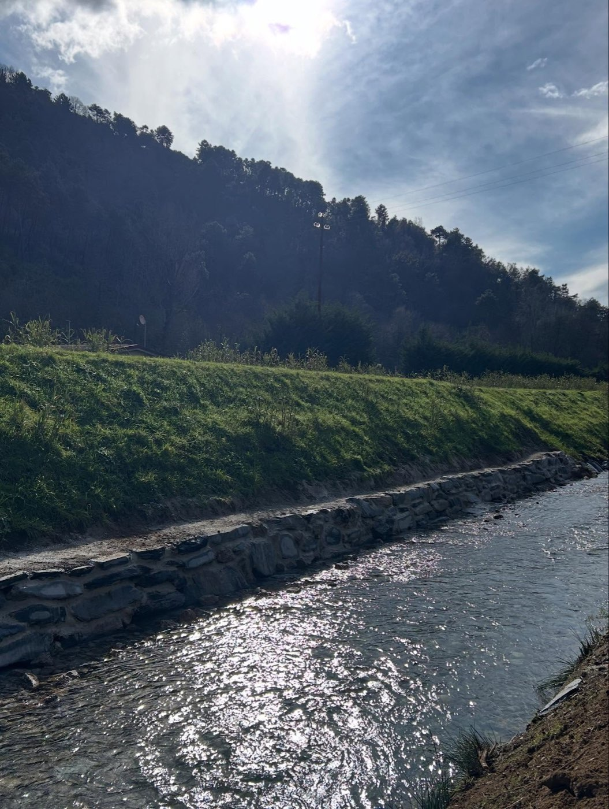
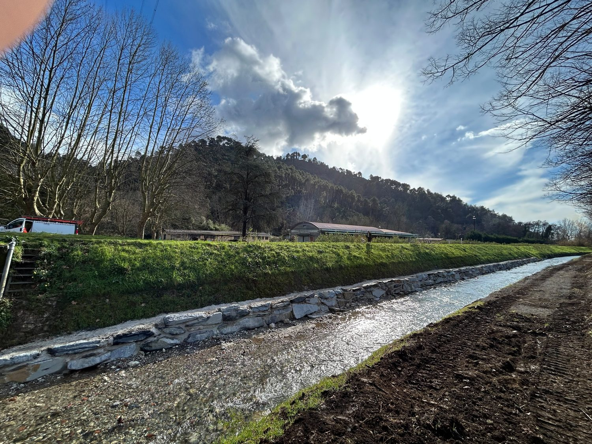
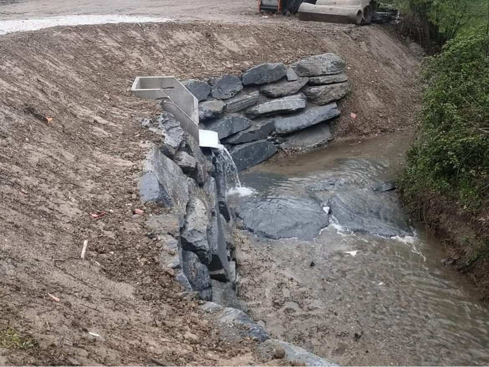
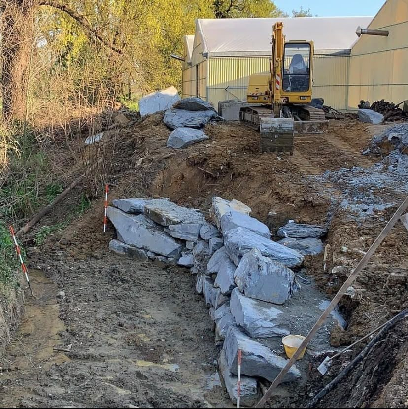
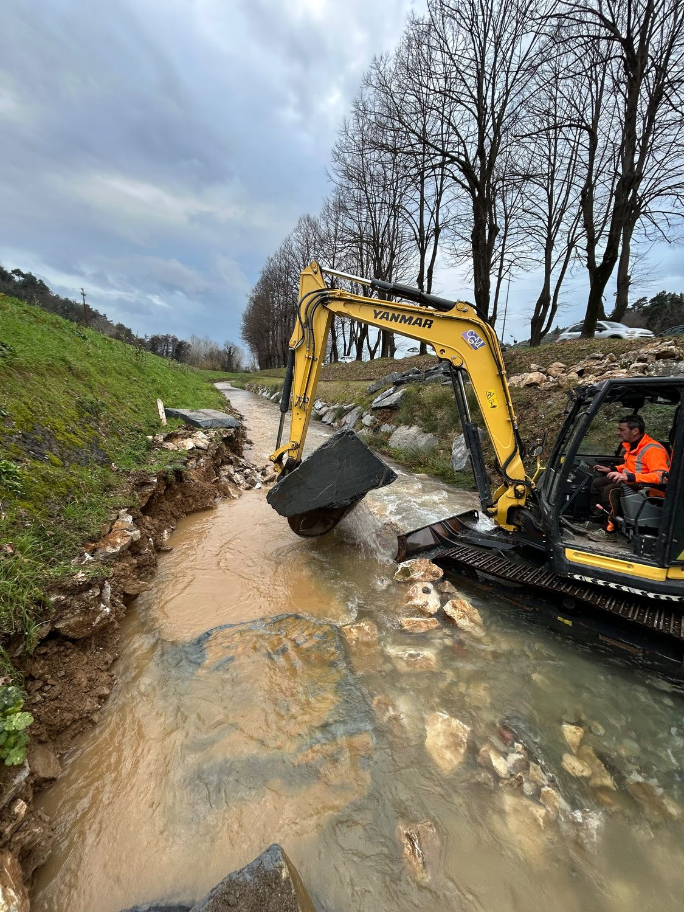
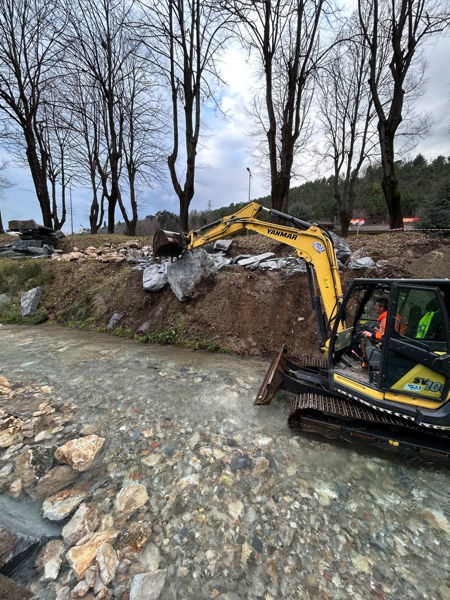
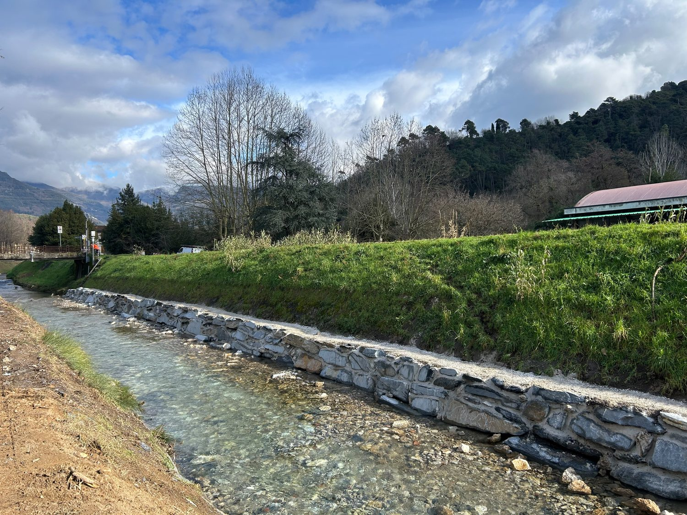

Massi posizionati con un idoneo criterio di stabilità, seguendo quote e inclinazioni di progetto.
Lavoriamo dentro e lungo i corsi d'acqua: difese spondali in massi ciclopici, briglie e salti di fondo, risagomatura di alvei, manutenzione di argini e canali. Sono cantieri con tempi stretti, vincoli stagionali e mezzi che devono entrare in acqua: la nostra squadra li affronta da anni per committenti pubblici e privati.
Dove: tutta la provincia di Pistoia e tutta la provincia di Lucca. Fuori provincia per i cantieri di durata.







Lo stesso cantiere, dall'inizio alla consegna.



Difesa spondale di canale — Il canale è stato rivestito lavorando a fiume vivo: i massi si posano dall'alveo, poi la scarpata viene riprofilata e lasciata rinverdire.
Ci mandi due foto del posto su WhatsApp: le diciamo se è fattibile e quanto costa.